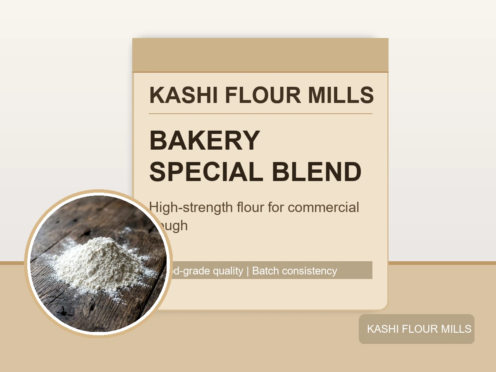
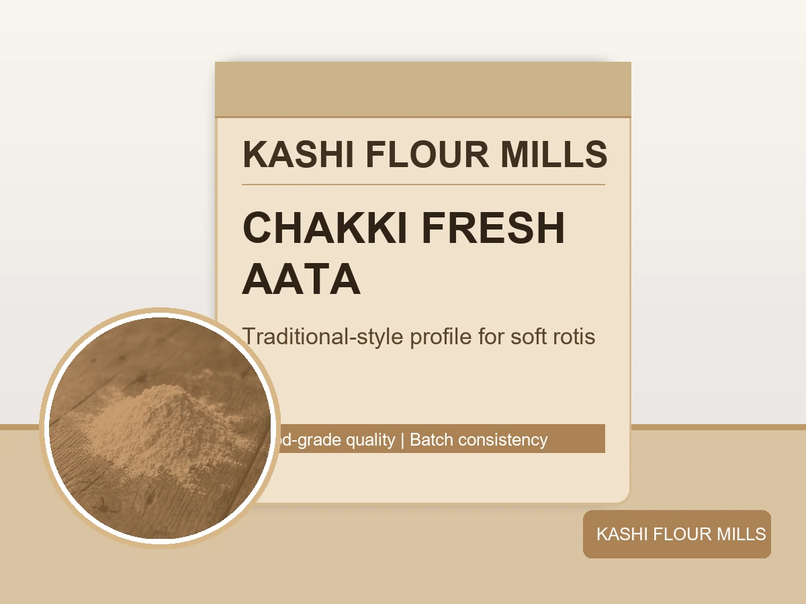
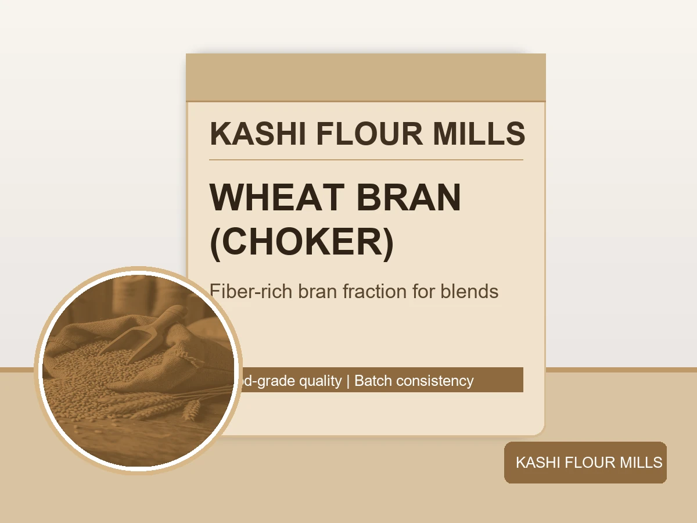

Consistent Quality, Practical Performance
Our range is designed for real production needs, from home consumption to commercial baking lines.

Super Fine Flour (Maida)
Refined white flour with smooth texture and dependable dough behavior for bakery and confectionery applications.
Moisture: Max 13.5%
Wet Gluten: Min 28%
Water Absorption: 60-61%
Use: Bread, pastries, biscuits.

Whole Wheat Flour (Aata)
Balanced whole wheat flour that supports soft, pliable dough and stable cooking performance in daily use.
Moisture: Max 12.0%
Ash Content: Max 1.50%
Protein: Min 11%
Use: Roti, chapati, household baking.

Bakery Special Blend
Commercial high-strength blend engineered for fermentation tolerance and consistent volume in bakery output.
Moisture: Max 13.0%
Wet Gluten: Min 30%
Protein: Min 12%
Use: Pizza dough, buns, donut lines.

Premium Semolina (Suji)
Golden, clean granulation for structured texture and predictable hydration in sweets and semolina-based recipes.
Moisture: Max 13.0%
Gluten: Min 26%
Granulation: Uniform
Use: Halwa, pasta, extrusion snacks.

Chakki Fresh Aata
Traditional-style aata profile with retained grain character for customers preferring stronger wheat flavor and texture.
Whole Grain Blend
No Added Preservatives
Freshly Milled Profile
Use: Premium household rotis.

Wheat Bran (Choker)
Nutrient-rich bran fraction suitable for fiber-enriched recipes and commercial feed formulations.
Crude Fiber: Min 14%
Moisture: Max 12.0%
Protein: Min 14%
Use: Bran blends, feed, value-added baking.